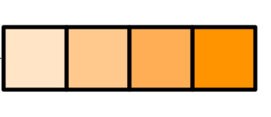
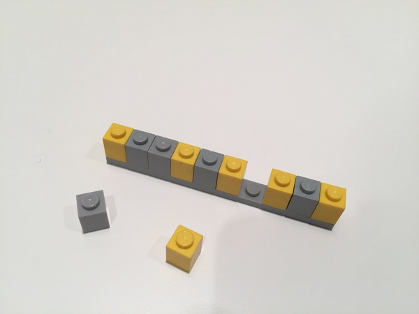

c(1,2,3,4)[1] 1 2 3 4✍️Software
. . .
¿Dialecto de S?
¿Paquete estadístico?
¿RStudio?
¿Lenguaje de programación?
¿Dispositivo gráfico?
‚úçÔ∏èüßë‚ÄçüéìVentajas
‚úçÔ∏èüßë‚ÄçüéìDesventajas
IDE - Entorno de desarrollo integrado
Herramientas para facilitar el uso de un lenguaje de programación
Editor de texto que ‘reconoce’ la sintaxis de un lenguaje
Atajos y herramientas para administrar y ejecutar código
Al instalar R instalamos:
base: las funciones fundamentales de R
list()
log()
cat() rm() etc…
Otros componentes de R-base:
utils, stats, datasets, graphics, grDevices, grid, methods, tools, parallel, compiler, splines, tcltk, stats4
Paquetes ‘recomendados’ (se instalan con R pero no se cargan automáticamente)
boot, class, cluster, codetools, foreign, KernSmooth, lattice, mgcv, nlme, rpart, survival, MASS, spatial, nnet, Matrix
>20,900 en CRAN (The Comprehensive R Archive Network)
muchos más en GitHub, GitLab, Bitbucket, Bioconductor, etc.
Se instalan desde R con:
install.packages() para paquetes de CRAN
remotes o pak para todos los demás repositorios

Instancia de R dedicada
Navegador apuntando al directorio del proyecto
Dir. de proyecto establecido como Dir. de Trabajo
Crear un proyecto para el curso en RStudio
Los proyectos en OneDrive pueden no funcionar correctamente

Exportar figuras y resultados a archivos
Evitar rm(list = ls()).
‘Hoja en blanco’ & reiniciar R seguido
Jenny Bryan & Jim Hester (2020)
What they forgot to teach you about R
Jenny Bryan (2018)
Zen And The aRt Of Workflow Maintenance
No se guarda el espacio de trabajo a un archivo .Rdata
No se carga el espacio de trabajo desde un archivo .Rdata al arrancar R

Ctrl+Shift+F10(Windows y Linux)
Command+Shift+F10(Mac)
Todo lo que existe es un objeto
Todo lo que ocurre lo hace una función
(Las funciones son objetos)
Las funciones (generalmente) viven en paquetes
Tablas con filas y columnas
Modelos
Listas
Gráficos
Todos los objetos tienen clases y atributos y hay distintas formas de crearlos



Números
c(1,2,3,4)[1] 1 2 3 4c(22.1,0.006,4.1)[1] 22.100 0.006 4.100Caracteres
c("perro","gato","rata","B")[1] "perro" "gato" "rata" "B" Lógicos (verdadero/falso)
c(TRUE,FALSE,FALSE,FALSE,TRUE)[1] TRUE FALSE FALSE FALSE TRUE
x <- c(1, 2, 3)Función c() para juntar elementos en un vector
x <- c(1,2,3)
y <- c("a","G","h")x[1] 1 2 3y[1] "a" "G" "h"class(x)[1] "numeric"class(y)[1] "character"c(1,"a",2)[1] "1" "a" "2"Al combinar caracteres y números hay conversión automática

Objeto tabular con filas y columnas
Puede almacenar objetos de distintas clases en las columnas
Nombres para cada columna
Se crean importando un archivo tabular o con data.frame()
mi_tabla <-
data.frame(id=c("rana","pez","nutria","gusano"),
ind_g=c(12,15,13,10),
listo=c(TRUE,TRUE,FALSE,TRUE))mi_tabla id ind_g listo
1 rana 12 TRUE
2 pez 15 TRUE
3 nutria 13 FALSE
4 gusano 10 TRUEreadreadr y readxlPaquetes adicionales para importar datos rectangulares desde archivos de texto y hojas de cálculo
Menos errores al importar
Mayor flexibilidad al leer archivos
Lectura más rápida
Funciones adicionales para limpiar los valores en las columnas
Importar una tabla a R desde un archivo
Si queremos hacer varias operaciones en secuencia:
Código anidado (los resultados se evalúan de adentro hacia afuera)
Pipes (estructuramos operaciones seriadas de izquierda a derecha)
notas <- c(7,8,8,10,6,9,5,9,8)
round(mean(notas), digits = 2)[1] 7.78Mano izquiera
(LHS)
operador ‘pipe’
%>%
de üì¶ magrittr
|> en R v >= 4.1.0
Mano derecha
(RHS)
Toma un objeto a la izquerda del operador y lo inserta como argumento en la función que esté a su derecha
* Por defecto lo que esté a la izquierda del ‘pipe’ se inserta como el primer argumento de la función
Reducen la necesidad de guardar resultados intermedios o de anidar código
Código más fácil de leer
Más fácil quitar o agregar pasos a la secuencia
Insertamos con
ctrl + shift + M
Adolfo Álvarez (2021)
The (updated) history of the pipe operator in R
library(magrittr)
notas %>%
mean() %>%
round(digits=2)[1] 7.78LHS |> RHS(argument = 12)
se convierte en
RHS(LHS, argument = 12)
dplyrFunciones separadas para las operaciones más comunes
Cada función solo hace una cosa pero la hace bien
Funciones intuitivas para:
Crear subconjuntos de filas y columnas
Crear o modificar columnas
| pais | especies | amenazadas | region |
|---|---|---|---|
| Indonesia | 670 | 191 | Asia |
| Brasil | 648 | 80 | America |
| China | 551 | 73 | Asia |
| Mexico | 523 | 96 | America |
| Peru | 467 | 53 | America |
| Congo | 430 | 15 | Africa |
| India | 412 | 93 | Asia |
| Kenya | 376 | 30 | Africa |
| Argentina | 374 | 38 | America |
| Ecuador | 372 | 47 | America |
| Venezuela | 363 | 35 | America |
| Tanzania | 359 | 41 | Africa |
paises_m <-
tibble::tribble(
~pais, ~especies, ~amenazadas, ~region,
"Indonesia", 670L, 191L, "Asia",
"Brasil", 648L, 80L, "America",
"China", 551L, 73L, "Asia",
"Mexico", 523L, 96L, "America",
"Peru", 467L, 53L, "America",
"Congo", 430L, 15L, "Africa",
"India", 412L, 93L, "Asia",
"Kenya", 376L, 30L, "Africa",
"Argentina", 374L, 38L, "America",
"Ecuador", 372L, 47L, "America",
"Venezuela", 363L, 35L, "America",
"Tanzania", 359L, 41L, "Africa"
)select()paises_m %>%
select(pais,
amenazadas) %>%
head(4)# A tibble: 4 × 2
pais amenazadas
<chr> <int>
1 Indonesia 191
2 Brasil 80
3 China 73
4 Mexico 96mutate()paises_m %>%
select(pais, amenazadas) %>%
mutate(amenazadas_log = log(amenazadas)) %>%
head(5)# A tibble: 5 × 3
pais amenazadas amenazadas_log
<chr> <int> <dbl>
1 Indonesia 191 5.25
2 Brasil 80 4.38
3 China 73 4.29
4 Mexico 96 4.56
5 Peru 53 3.97filter()Retiene solamente las filas que cumplen una condición
paises_m %>%
select(pais, especies, amenazadas) %>%
filter(amenazadas > 75)# A tibble: 4 × 3
pais especies amenazadas
<chr> <int> <int>
1 Indonesia 670 191
2 Brasil 648 80
3 Mexico 523 96
4 India 412 93rename()Nombre nuevo primero luego variable objetivo
paises_m %>%
rename(country=pais,
species=especies, threatened=amenazadas) %>%
head(3)# A tibble: 3 × 4
country species threatened region
<chr> <int> <int> <chr>
1 Indonesia 670 191 Asia
2 Brasil 648 80 America
3 China 551 73 Asia Importar el archivo “littorinidae.csv”
Descartar columnas
Crear subconjuntos taxonómicos o geográficos
ggplot2Una gramática puede ayudar a construir oraciones diferentes con una pequeña cantidad de verbos, sustantivos y adjetivos, en lugar de memorizar cada oración específica. Una pequeña cantidad de los componentes básicos de ggplot2 y de su gramática puede crear cientos de gráficos diferentes.
Introducción a la ciencia de datos
Rafael A. Irizarry (2020)

ggplot(data, aes(x,y)) +
geom_point()
ggplot() crea el gráfico
aes() determina los vínculos entre las variables y las propiedades del gráfico
geom_* define la capa con la representación visual de los datos
| largo | peso | edad |
|---|---|---|
| 9 | 20 | adulto |
| 8 | 13 | juvenil |
| 7 | 15 | juvenil |
| 13 | 18 | adulto |
| 11 | 21 | adulto |
| 6 | 14 | juvenil |
lagartijas <-
tibble::tribble(
~largo, ~peso, ~edad,
9L, 20L, "adulto",
8L, 13L, "juvenil",
7L, 15L, "juvenil",
13L, 18L, "adulto",
11L, 21L, "adulto",
6L, 14L, "juvenil"
)| largo | peso | edad |
|---|---|---|
| 9 | 20 | adulto |
| 8 | 13 | juvenil |
| 7 | 15 | juvenil |
| 13 | 18 | adulto |
| 11 | 21 | adulto |
| 6 | 14 | juvenil |
| x | y | figura |
|---|---|---|
| 9 | 20 | círculo |
| 8 | 13 | triángulo |
| 7 | 15 | triángulo |
| 13 | 18 | círculo |
| 11 | 21 | círculo |
| 6 | 14 | triángulo |
ggplot(data = lagartijas,
aes(x = largo,y = peso))+
geom_point()ranas.csv
01_armar-plots.R
sf“Simple features for R”
Manejo espacial de puntos, líneas y polígonos
Métodos propios para graficar (plot())
Compatible con ggplot2
Leer cualquier archivo vectorial (shp)
Cargar datos desde paquetes
Datos de países, estados, etc.
Función ne_countries y pedir salida en formato simple features
library(rnaturalearth)
chl <- ne_countries(country = "Chile", returnclass = "sf")Función st_read para importar archivos, o st_as_sf para asignar geometría
Argumento coords para especificar las columnas con datos espaciales (long, lat)
Argumento crs para especificar sistema de coordenadas
Importar archivo ‘littorinidae.csv’
Filtar datos para un solo género y un solo país (o por latitud/longitud)
Graficar los puntos de ocurrencia en un mapa